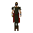
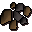
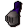

Donny the lad

| Config name | donny_the_lad |
| NPC id | 203 |
| Combat level | 34 |
| Hitpoints | 37 |
| Attack / Strength / Defence | 32 / 26 / 27 |
| Respawn | 100 ticks |
| Options | Talk-to, Attack |
| Category | bandit_camp_leader |
| Wander range | 5 tiles from spawn |
| Max range | 7 tiles from spawn |
| Area folder | area_wilderness |
| Defined in | scripts/areas/area_wilderness/configs/bandit_camp.npc |
| Bonuses | Attack bonus 9, Strength bonus 9, Stab def 9, Slash def 8, Crush def 10 |
Donny the lad
Has a fearsome posture.
Show all 1 spawn on the world map → Open in knowledge graph →
Drops
Drop script: scripts/drop tables/scripts/bandit_camp_leaders.rs2 (category handler _bandit_camp_leader)
Drop table
| Item | Quantity | Rarity | Notes |
|---|---|---|---|
| 48 | 15/64 (23.44%) | ||
| 15 | 9/64 (14.06%) | ||
| Herb drop table table | see table | 15/128 (11.72%) | |
| 8 | 11/128 (8.59%) | ||
 Silver ore | 1 | 11/128 (8.59%) | |
| 70 | 5/64 (7.81%) | ||
| 5 | 5/128 (3.91%) | ||
| 2 | 1/32 (3.12%) | ||
| 4 | 1/32 (3.12%) | ||
| 12 | 3/128 (2.34%) | ||
| 3 | 3/128 (2.34%) | ||
| 30 | 3/128 (2.34%) | ||
| 150 | 1/64 (1.56%) | ||
| Gem drop table table | see table | 1/64 (1.56%) | |
| 1 | 1/128 (0.78%) | ||
 Steel full helm | 1 | 1/128 (0.78%) | |
| 5 | 1/128 (0.78%) |
Tertiary drops
| Item | Quantity | Rarity | Notes |
|---|---|---|---|
| Clue scroll (medium) | 1 | 1/128 (0.78%) | members |
Locations
| Area | Coordinates | Level | Count | Map |
|---|---|---|---|---|
| Bandit Camp | 3038, 3695 | 0 | 1 | view |